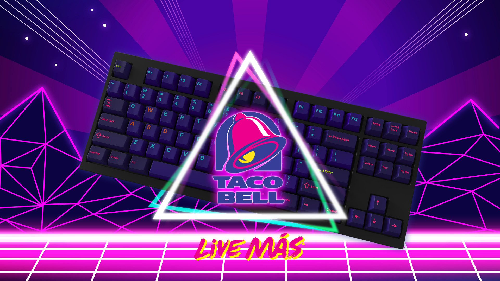

Enter to win the Live Mas Gaming Setup
At participating U.S. Taco Bell® locations for a limited time only. Contact local restaurant for hours and participation, which vary.
Enter to win the Live Mas Gaming Setup
At participating U.S. Taco Bell® locations for a limited time only. Contact local restaurant for hours and participation, which vary.
30 DAYS OF TACOS
Taco Bell Rewards members are eligible to purchase a Taco Lover’s Pass (the “Pass”), which allows the holder to redeem up to one (1) qualifying taco per day, for up to 30 consecutive days beginning on the date of Pass purchase. Pass price may vary by the pickup location you select. Redemptions must be made via the Taco Bell App for in-restaurant pickup or drive-thru at a participating location. While supplies last. Substitutions may incur an upcharge. Terms and conditions apply.
FREE DORITOS® LOCOS TACOS
Free Doritos® Locos Tacos reward valid for 14 days from issuance and redeemable only via the Taco Bell mobile app for in-store/drive-thru pickup orders, at participating U.S. Taco Bell® locations, while supplies last. Not available for web pay ahead, pickup order or delivery order. Must be a registered Taco Bell app user in order to redeem. Reward valid once per registered user. No product or ingredient substitutions, upgrades or add-ons. Reward is non-transferable and cannot be combined with any other offer. No cash value. Terms and conditions apply.
RECYCLING JUST GOT SAUCY
Please visit https://www.terracycle.com/en-US/brigades/tacobell for more details about the program, including how to sign up for a TerraCycle account, shipping instructions and best practices for how to recycle. This program is currently only available in the U.S.